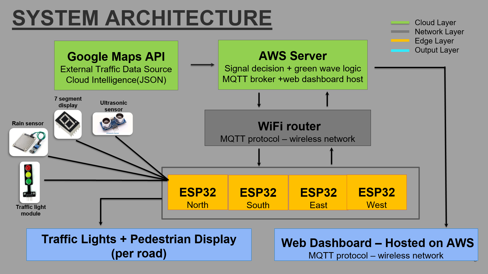

1. Introduction
The Problem

Current traffic management infrastructure in Sri Lanka relies almost exclusively on fixed-cycle traffic signals that operate on predetermined time intervals. This contributes to Rs. 70 billion in annual economic losses.
- Inefficiency: Empty roads at 2 AM still force drivers to wait a full 60-second red cycle.
- Rush-Hour Imbalance: High-traffic roads receive the same green time as empty cross-streets.
- Weather Blindness: Fixed systems ignore the 70% longer braking distance required in rain.
- Pedestrian Danger: No on-demand crossing capability forces pedestrians to jaywalk.
The HYDRA Solution
HYDRA replaces conventional fixed-cycle traffic signals with a real-time, sensor-driven control system. By combining embedded hardware at the intersection edge with cloud-based intelligence hosted on AWS EC2, HYDRA dynamically adapts signal timing to actual road conditions.
- Dynamic Timing: Adjusts green phases based on live vehicle queue lengths.
- Weather-Aware: Automatic yellow-light extension during rain.
- Pedestrian Integration: Enable on-demand and immediate pedestrian crossing management.
- Resilient: Failsafe local cycle activates automatically if cloud connectivity is lost.
2. Solution Architecture
HYDRA is built on a three-layer cloud-edge architecture. Each layer has a clearly defined responsibility, and communication between layers is standardized through MQTT and HTTP/WebSocket protocols.
High-Level System Architecture

Cloud-edge fusion combining AWS servers, MQTT brokers, and ESP32 edge nodes.
Data Flow & Processing

The logical flow from edge sensors through the AWS fast brain to physical signal actuation.
End-to-End Data Flow
| Step | Process & Action | Data Output |
|---|---|---|
| 1 | ESP32 reads sensor values continuously (Ultrasonic, Rain, Touch). | Raw sensor data |
| 2 | ESP32 packages readings into JSON and publishes to MQTT via Wi-Fi (`hydra/sensor/{road_id}`). | JSON payload |
| 3 | Node.js backend parses JSON and queries Google Maps Traffic API. | Traffic density score (0-100) |
| 4 | Signal timing algorithm calculates optimal green time. Commands published back via MQTT and logged to MongoDB. | Computed timing values |
| 5 | ESP32 subscribes to `hydra/signal/{road_id}`, receives command, and actuates LED traffic lights and 7-segment display. | LED state + countdown |
| 6 | React dashboard polls AWS via REST API/WebSocket for real-time visual updates. | Live UI updates |
3. Hardware & Software Designs
Edge Layer (Hardware Sensing)
Each road unit uses an ESP32 DevKit V1 responsible for continuously reading sensors, packaging data, and actuating signals. This ensures millisecond-level responsiveness at the physical intersection.
Ultrasonic (HC-SR04)
Placed at 5cm and 15cm along the road. 1 sensor blocked = low traffic; both blocked = heavy traffic.
Rain Sensor
Elevated mount above road. Triggers weather-aware logic when road surface is wet.
Touch Button
Immediate crossing request during red; crossing request queued during green phase.
LED & 7-Segment
Actuates RED, YELLOW, GREEN states and displays remaining seconds for the current phase.
Cloud & Client Layer (Software Stack)
| Category | Technology | Purpose in HYDRA |
|---|---|---|
| Backend | Node.js + Express | Server-side processing, signal timing algorithm, REST API. |
| Protocol | MQTT (Mosquitto) | Lightweight pub/sub messaging between ESP32 and cloud. |
| Database | MongoDB | Persistent storage for sensor data, signal logs, traffic events. |
| External API | Google Maps Traffic API | External traffic density enrichment for intersection area. |
| Frontend | React | Live web dashboard for monitoring and manual control. |
4. Key Functionalities
Dynamic Green Time Calculation
The core functionality of HYDRA is its ability to calculate optimal green signal durations in real time. The algorithm combines two main data sources:
- Local sensor readings from the road's two ultrasonic sensors (queue length proxy).
- Google Maps Traffic API congestion score for the intersection area.
The base green time is adjusted using the following rules applied in sequence:
- Base Green Time: Configurable per intersection (default 8 seconds).
- One Ultrasonic Sensor Blocked: Add 3 seconds to green time.
- Both Ultrasonic Sensors Blocked: Add 6 seconds to green time (replaces the +3s rule).
- Google Maps Congestion Score HIGH: Add a further 2–4 seconds.
- Pedestrian Crossing Requested: Reserve minimum crossing time at next red phase.
Weather-Aware
The rain sensor provides a binary wet/dry road status. When rain is detected:
- Yellow light duration is automatically extended by a factor of 1.5x.
- Accommodates the 70% longer braking distance required on wet roads.
- Factored into timing calculations for all roads simultaneously via cloud.
Pedestrian Sync
Capacitive touch buttons provide two modes of crossing management:
- During RED (Immediate): Request acknowledged instantly, ensuring current red phase is safe.
- During GREEN (Queued): Request is queued, factored into the next cycle, and honoured at the next red phase.
Multi-Intersection Green Wave
For deployments spanning multiple intersections, HYDRA's cloud backend supports green wave synchronization. The Node.js server tracks timing upstream and downstream, adjusting green start times so vehicles travelling at the speed limit encounter consecutive green lights without stopping.
Live Web Dashboard
- Signal State Display: Live RED/YELLOW/GREEN indicators.
- Sensor Panel: Live ultrasonic readings, rain flag.
- Timing Panel: Current computed durations per road.
- Traffic Map: Google Maps integration with live congestion overlays.
- Event Log & Overrides: Manual state controls for emergencies.
5. Testing & Resilience
Fail-Safe Local Cycle
To ensure rigorous resilience testing, the ESP32 firmware implements a watchdog mechanism that monitors Wi-Fi connectivity and MQTT heartbeat messages from the cloud. If connectivity is lost, it automatically reverts to a fixed local cycle to prevent intersection failure:
6. Detailed Budget
Hardware budget sized for a full four-road intersection deployment. Cloud infrastructure costs (AWS/Google Maps API) are handled separately.
| Item | Qty | Unit Cost (LKR) | Total (LKR) |
|---|---|---|---|
| ESP32 DevKit V1 (N, S, E, W) | 4 | 1,650 | 6,600 |
| LED Traffic Light Module | 8 | 150 | 1,200 |
| Rain Sensor Module | 1 | 250 | 250 |
| Ultrasonic Sensor HC-SR04 | 8 | 200 | 1,600 |
| Seven Segment Display | 4 | 80 | 320 |
| Capacitive Touch TTP223 | 4 | 100 | 400 |
| Bread Boards | 6 | 150 | 900 |
| 3D Printed Enclosures | - | - | 16,000 |
| Others (wiring, connectors, misc.) | - | - | 2,230 |
| TOTAL BUDGET | LKR 29,500 |
7. Conclusion & Future Work
System Impact
HYDRA presents a complete, working proof-of-concept for cloud-edge fusion in urban traffic management. By dynamically adapting signal timing based on actual road conditions—vehicle density, weather, and pedestrian demand—HYDRA eliminates the fundamental inefficiency of fixed-cycle traffic lights.
Future Work
- Computer Vision: Replace ultrasonic sensors with edge-AI cameras.
- Emergency Preemption: Integrate GPS for ambulance green corridors.
- Adaptive ML: Train models on MongoDB historical data.
- City-Scale Deployment: Deploy at high-congestion intersections in Colombo.